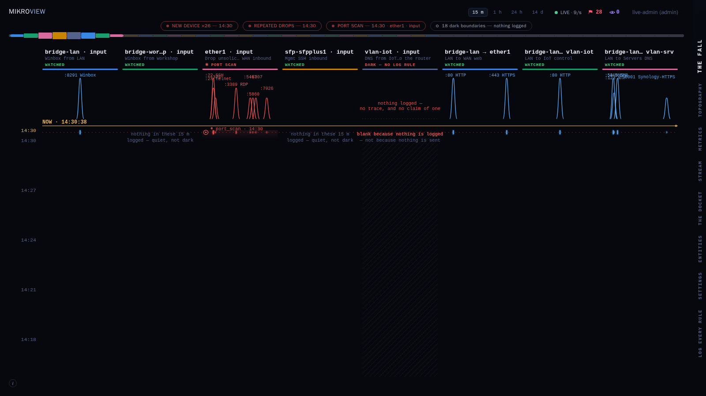
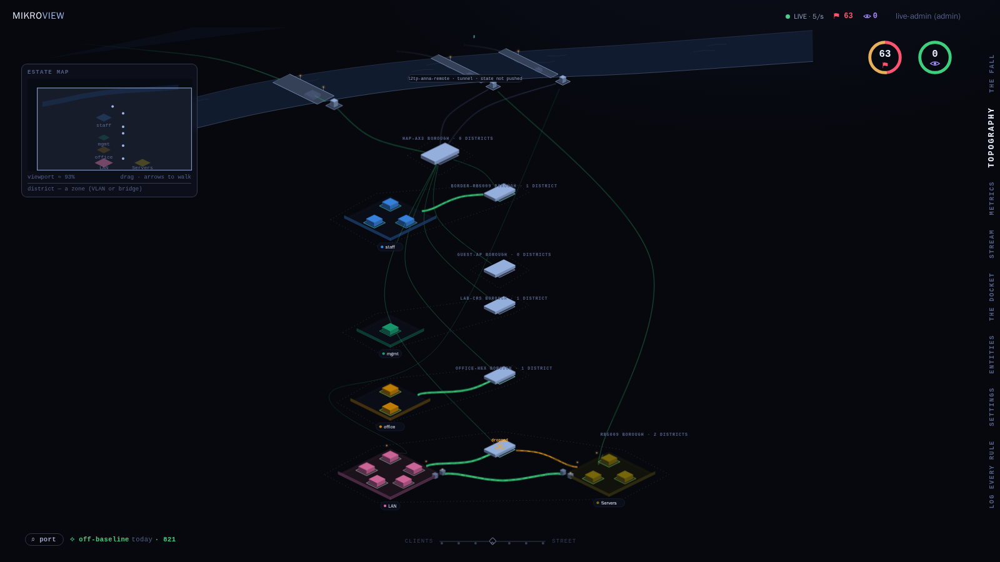
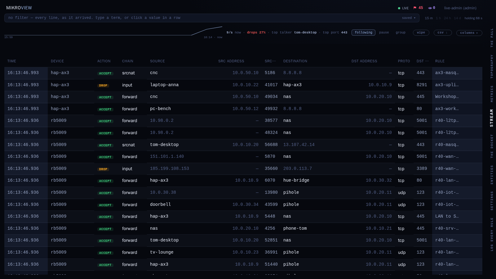

RouterOS · firewall live view
MikroView turns RouterOS's firewall log into a live picture of your network: every boundary the router watches, every connection accepted, dropped or rejected, and which rule decided it. The router pushes; MikroView never logs in to it — no RouterOS credentials, no API access.



push, not poll
RouterOS forwards firewall log lines over syslog-over-TLS, and can push its config and encrypted backups the same way. MikroView never connects to the router and holds no RouterOS credentials; the only secret on the router is an ingest token MikroView minted for that device. No polling loop hammering the router — just a stream it was already able to send.
secure by default
Local accounts or OIDC/SSO. Events live in memory unless you opt in to encrypted per-day history files; an optional SFTP drop box keeps your router's own nightly backups for the day the router is gone.
one container
A distroless image, near-zero load on the router, and nothing else to run. Self-hosted, AGPL, yours.
step 1 of 2 · start it
$ docker run -d --name mikroview \ -p 6514:6514/tcp -p 443:8080 \ ghcr.io/tomlawesome/mikroview:latest
step 2 of 2 · point the router at it
Sign in, and the built-in wizard writes every RouterOS command with your values already filled in — syslog over TLS (RouterOS 7.18+). Paste it once; the picture builds itself. latest is the most recent release; each release is also tagged v<version> if you'd rather pin one. Reference: docs/routeros-setup.md and docs/reading-the-fall.md.